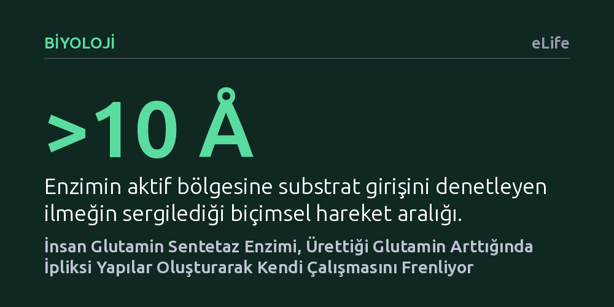

BIYOLOJI · eLife · 2026-10-18
Hücrelerin değişen besin seviyelerine gen ifadesi haricinde nasıl uyum sağladığı araştırıldı. İnsan glutamin sentetaz enziminin, ürettiği glutamin biriktikçe geri dönüşümlü iplikçikler oluşturarak aktif bölgesini kapattığı ve amonyak tüketimini frenlediği bulundu.
Enzimlerin sadece genetik komutlarla değil, ürettikleri maddenin yoğunluğuna göre şekil değiştirip iplikçikler oluşturarak anlık olarak kendilerini frenleyebildiğini gösteriyor.

Canlı hücrelerin hayatta kalabilmesi, dış ortamdan gelen veya içeride üretilen besin maddelerinin dengede tutulmasına bağlıdır. Metabolizmanın temel yapı taşlarından biri olan glutamin amino asidi, hücresel enerji üretimi ve azot aktarımı için vazgeçilmezdir. Bu molekülün üretimini gerçekleştiren insan glutamin sentetaz (GS) enzimi, hücre içindeki en kritik katalizörlerden biridir. Ancak ortamda aşırı miktarda ürün birikmesi hücresel dengeyi bozabileceğinden, hücrenin bu üretimi gerektiğinde hızla yavaşlatması veya durdurması gerekir.
Geleneksel olarak enzim düzeylerinin gen ifadesi yoluyla, yani ilgili genin kopyalanıp yeni proteinler üretilmesi veya mevcut proteinlerin yıkılmasıyla ayarlandığı düşünülür. Ne var ki gen ifadesine dayalı bu mekanizmalar saatler süren hücresel süreçler gerektirir. Oysa besin seviyeleri saniyeler veya dakikalar içinde dalgalanabilir. Bu durum şu temel soruyu doğurur: İnsan glutamin sentetaz enzimi, genetik yanıtı beklemeden, doğrudan ortamdaki ürün miktarına bakarak kendi etkinliğini anlık olarak nasıl frenler?
Araştırmacılar bu sorunun yanıtını bulmak için tek bir yöntemle yetinmeyip yapısal biyoloji ve hesaplamalı kimyayı birleştirdi. İlk olarak zamana duyarlı kriyojenik elektron mikroskopisi (kriyo-EM) teknolojisi kullanıldı. Bu yöntemde enzim çözeltileri hızla dondurularak moleküllerin doğal hareketleri milisaniyeler düzeyinde yakalandı. Böylece enzimin serbest halden glutamin varlığındaki haline geçişi doğrudan atomik ayrıntıda görüntülendi.
Mikroskop görüntülerinin sunduğu durağan kesitleri tamamlamak için metadinamik tabanlı moleküler topluluk simülasyonları yürütüldü. Bu simülasyonlar, enzimin aktif bölgesini bir kapı gibi denetleyen hareketli ilmeğin uzaydaki salınımlarını ve biçimsel olasılıklarını hesapladı. Son olarak, simülasyon ve mikroskopi bulguları hem laboratuvar ortamında saflaştırılmış proteinlerle (in vitro) hem de canlı hücre modellerinde gerçekleştirilen işlevsel deneylerle çapraz doğrulamadan geçirildi.
Elde edilen bulgular, insan glutamin sentetazının ürün birikimine şaşırtıcı bir biçimsel dönüşümle yanıt verdiğini gösterdi. Ortamdaki glutamin yoğunluğu arttığında, bağımsız enzim molekülleri birbirine kenetlenerek uzun ve geri dönüşümlü iplikçikler (filamentler) oluşturuyordu. İlginç olan, bu kenetlenme arayüzünde oluşan ortak bağlanma cebine bizzat glutamin molekülünün yerleşmesi ve iplikçiği adeta bir harç gibi sabitlemesiydi.
Zamana duyarlı ölçümler, bu iplikçikleşmenin enzimin fizyolojik yoğunluklardaki amonyağa olan bağlanma özgüllüğünü azalttığını ortaya koydu. Metadinamik hesaplamalar, substrat girişini denetleyen aktif bölge ilmeğinin 10 angströmlük geniş bir hareket aralığına sahip olduğunu gösterdi. İplikçik oluştuğunda, bu ilmeğin kapalı konumda kalmasını sağlayan geçici temaslar kararlı hale geliyor, böylece aktif bölgeye amonyak girişi fiziksel olarak engelleniyordu. Hücre içi deneyler de bu temasların katalitik işlev için zorunlu olduğunu doğruladı.
Bu çalışma, hücrelerin metabolik kararlılığı korumak için doğrudan ürün yoğunluğuna bağlı fiziksel bir negatif geri besleme mekanizması kullandığını kanıtlıyor. Hücrede glutamin bollaştığında enzimler kendi kendilerine iplikçik oluşturup amonyak tüketimini yavaşlatıyor; glutamin azaldığında ise bu iplikçikler kendiliğinden çözünerek enzimler yeniden aktif hale geliyor. Bu sayede hücre, hiçbir genetik komut veya ek enerji harcamadan yerel üretim hızını anında ayarlayabiliyor.
Bulgular, enzimlerin yalnızca statik yapılar olmadığını, esnek ilmek hareketleri ve üst-moleküler iplikçikleşme sayesinde çevrelerindeki kimyasal sinyalleri doğrudan okuyabildiklerini ortaya koyuyor. Glutamin sentetazın bu kendine özgü çalışma mekanizması, hem hücresel metabolizmanın temel işleyişine ışık tutuyor hem de aşırı glutamin tüketimiyle karakterize olan çeşitli metabolik bozukluklarda hedeflenebilecek yeni allosterik temas noktaları sunuyor.